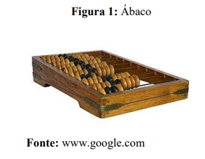

Evolução histórica dos computadores
Índece
- Introdução
- Maquinas de calculo
- O Ábaco
- A Pascalina
- Máquina de Gottfierd Leibniz
- Máquina de teia de Joseph Marie Jacquard
- Máquina analítica de Charles Babbage
- Cartões perfurados
- Segunda guerra mundial
- Modelos de zuse
- Computador Bombe de 1941
- Computadores Mark 1 e Mark 2
- Computador ENIAC 1945
- Evolução dos computadores após a segunda guerra mundial
- Computador industrial UNIVAC
- Armazenamento em disco rígido
- Computação gráfica
- Dispositivo mouse
- A era dos computadores pessoas
- O disquete
- O microprocessador
- Primeira interface gráfica
- Computadores da Apple e concorrentes
- Conclusão
- Bibliografia
Introdução
O computador foi essencialmente criado para ajudar o homem a automatizar os seus cálculos e ajuda-lo na realização de diversas tarefas. A evolução das primeiras maquinas calculadoras deram origem àquilo que nós conhecemos hoje como computador.
O computador não tem um criador especifico, exatamente pelo facto de que foram vários aqueles que participaram da sua evolução. O presente trabalho, prevê idealizar como foi a evolução do computador, deste o mecanismo de cálculo mais robusto como ábaco até o mais sofisticado.
1 Maquinas de calculo
1.1 O Ábaco
A história dos computadores começa a partir do momento em que o homem sente a necessidade de realizar cálculos de forma rápida e precisa, o que levou a criação de uma estrutura de madeira com anéis chamada de Abacus, como forma de apoio para calcular as vendas do comércio. O ábaco foi criado 3000 A.C, no médio oriente e até hoje usado em algumas regiões do oriente de África.
1.2 A Pascalina
O ponto de partida para o início dos computadores atuais, foi em 1642 com a máquina La Pascaline do filósofo, matemático e físico francês Blaise Pascal, sendo a primeira calculadora mecânica capaz de realizar operações de adição e subtração.
1.3 Máquina de Gottfierd Leibniz
Por volta de 1671, na Alemanha o matemático Gottfierd Leibniz evento uma máquina, muito parecida com a pascaline que efetuava as quatro operações aritméticas básicas.

1.4 Máquina de teia de Joseph Marie Jacquard
Em 1802, em França Joseph Marie Jacquard passou a utilizar os cartões perfurados para controlar as suas maquinas de teia automatizando as e aperfeiçoando-as.

1.5 Máquina analítica de Charles Babbage
O conceito de máquina programável foi idealizado entre 1834 e 1835 pelo cientista e engenheiro mecânico francês Charles Babbage, no qual foi projetado uma máquina analítica que utilizava somente partes mecânicas para realizar diversas tarefas programáveis.

1.6 Cartões perfurados
Em 1889, o norte-americano Herman Hollerith fundador da Tabulating Machine Company, precursora da International Business Machine ou IBM, Hollerith e o engenheiro mecânico francês Joseph-Marie Jacquard desenvolveram cartões perfurados, esses cartões guardavam informações e comandos nas máquinas, posteriormente essa tecnologia foi aprimorada e pioneira da memória utilizada nos computadores modernos.

2 Segunda guerra mundial
Um dos maiores conflitos militares envolvendo as maiores potências mundiais, organizadas em Aliados e o Eixo entraram em conflito no ano de 1939, portanto os computadores tiveram um papel fundamental na Segunda Guerra Mundial, seu objetivo foi computar cálculos estratégicos mais rápidos que um ser humano e descriptografar mensagens dos inimigos, consequentemente criando novas tecnologias para as próximas gerações.
2.1 Modelos de Zuse
O primeiro computador eletromecânico a utilizar código binário foi o modelo Z1 criado pelo engenheiro alemão Konrad Zuse entre 1935 e 1938 durante a Segunda Guerra, o computador trabalhava com lógica booleana utilizando um sistema de relés, mas possuía uma programação limitada e durante um ataque aéreo foi destruído, por fim em 1989 ocorreu sua reconstrução para expor no museu de Berlin. O modelo Z1 foi refinado e nomeado como Z2 em 1939, tendo uma memória mecânica com relés, o modelo Z3 de 1941 é a sua criação mais sofisticada e a única sobrevivente da guerra.
2.2 Computador Bombe de 1941
Nos acontecimentos da Segunda Guerra em 1941, foi desenvolvido o computador chamado Bombe, construído como um meio eletromecânico para decifrar as mensagens nazistas baseadas em uma linguagem de símbolos chamada ENIGMA, o Bombe britânico é concebido pelo engenheiro Harold Keen e Alan Turing da British Tabulating Machine Company. Centenas de computadores bombes foram construídos com o propósito de determinar as posições diárias de partida do rotor das máquinas de criptografia Enigma, o que por sua vez permitiu aos britânicos descriptografar mensagens alemãs.

2.3 Computadores Mark 1 e Mark 2
Na universidade de Harvard foi projetado o Automatic Sequence Controlled Calculator ou ASCC, um computador capaz de executar as quatro operações fundamentais de aritmética, logaritmos, potenciação, razão de seno e raiz quadrada, com autoria do físico Howard Aiken em 1937, depois de duas rejeições o projeto da gigante calculadora automática teve uma parceria entre Harvard e a IBM em 1944, chamando-o de Harvard Mark I. As dimensões deste computador chagavam a ser do tamanho de uma sala, com 16 metros de comprimento e 2,4 metros de altura, com um peso de quase 5 toneladas. Uma das primeiras programadoras do Mark I foi Grace Hopper, uma matemática da Marinha dos Estados Unidos, além disso ela ajudou Aiken a escrever o manual de operação do ASCC.
Depois da Segunda Guerra em 1947, Aiken e sua equipe finalizaram o Mark II financiado pela Marinha dos Estados Unidos, a diferença entre os modelos é a maior velocidade para realizar os cálculos, principalmente nas funções de adição e multiplicação e isso foi possível com a substituição dos contadores eletromecânicos utilizados no Mark I por relés eletromagnéticos de maior precisão.

2.4 Computador ENIAC 1945
Iniciado em 1943, o computador Electronic Numerical Integrator and Computer ou ENIAC foi construído por John Mauchly e J. Presper Eckert na Escola Moore de Engenharia Elétrica da Universidade da Pensilvânia, sendo finalizado com sucesso em 1945. Devido à sua tecnologia eletrônica, ao contrário de eletromecânica, é mil vezes mais rápido do que qualquer outro computador de sua época. O ENIAC usou fiação de painel a painel para programação, usou cerca de 18 mil válvulas, incluindo 70 mil resistores, 10 mil capacitores, 6 mil switches e 1500 relés, ocupou 1800 metros quadrados e pesou cerca de 27 toneladas. Acreditava-se que a ENIAC tinha feito mais cálculos ao longo dos dez anos em que estava em operação do que toda a humanidade tinha até então.
3 Evolução dos computadores após a segunda guerra mundial
Alguns meses depois da Segunda Guerra Mundial, as novas tecnologias que foram criadas para a guerra, foram aprimoradas para atender o mercado industrial, como a memória RAM, o computador UNIVAC I, o silício para a criação de semicondutores, os discos rígidos e a linguagem FORTRAN, sendo que a maioria dessas tecnologias ainda são utilizadas atualmente.
3.1 Computador industrial UNIVAC
Depois da Segunda Guerra as indústrias norte-americanas necessitavam de novas tecnologias para automatizar seus processos, com isso o Universal Automatic Computer ou conhecido pela sua sigla UNIVAC I, foi o primeiro computador que atendeu o mercado industrial, sua estrutura robusta com 5 mil válvulas em operação e pesando aproximadamente 13 toneladas. Os programadores lidavam com quase 6 mil chaves e cabos que eram conectados em seu painel principal.
O UNIVAC I apresenta a unidade de fita chamada UNISERVO. Foi o primeiro dispositivo de armazenamento de fita para um computador comercial e o seu baixo custo relativo, portabilidade e capacidade offline ilimitada de fita magnética tornou-se muito popular. As fitas UNIVAC eram feitas de bronze fosforoso com um revestimento metálico. Pesando cerca de três quilos, cada bobina pode conter 1.440.000 dígitos decimais e pode ser lido a 100 polegadas por segundo.
3.2 Armazenamento em disco rígido
Os computadores utilizavam fitas magnéticas para armazenar as informações, mas com uma pequena quantidade de dados geravam grandes rolos de fita, com isso iniciou-se a era do armazenamento em disco magnético com o computador RAMAC 305, desenvolvido pela IBM em 1956 para o Zellerbach Paper em San Francisco.
O computador foi baseado na nova tecnologia do disco rígido sendo o primeiro do mundo. A unidade de disco RAMAC era composta por 50 pratos de metal revestidos magneticamente capazes de armazenar cerca de 5 milhões de caracteres de dados ou 5 Megabytes. O RAMAC permitiu acesso aleatório em tempo real a grandes quantidades de dados, ao contrário da fita magnética ou cartões perfurados.

3.3 Computação gráfica
O Sketchpad foi um sistema de computador desenvolvido por Ivan Sutherland em 1963 em sua tese de doutorado, onde recebeu o Prêmio Turing em 1988 e o Prêmio Kyoto em 2012, O sistema funcionou no computador Lincoln TX-2 de 1958 no MIT.
O bloco de desenhos virtuais é considerado o pai de modernos sistemas de design como CAD e CAM, sendo assim um grande avanço no desenvolvimento da computação gráfica. Foi o primeiro sistema a utilizar uma GUI completa (Interface gráfica do usuário), usando uma exibição de pontos X-Y e a caneta de luz recentemente inventada para desenhar as formas geométricas na tela do monitor.

3.4 Dispositivo mouse
O dispositivo mouse foi criado pelo engenheiro Douglas Engelbart no início da década de 1960 em seu laboratório de pesquisas no Stanford Research Institute. O primeiro protótipo do dispositivo tinha o objetivo de melhorar a interação entre o usuário e o computador, sendo mais um avanço para a computação gráfica. A mecânica do dispositivo é constituída por um par de rodas, onde uma se movimenta para a vertical e outra para a horizontal, formando o encontro dos pontos de X e Y na tela do computador.

4 A era dos computadores pessoas
A era da eletrônica digital foi marcada com os microcomputadores pessoais, sendo apropriados para um ambiente doméstico pelo seu tamanho reduzido e isso só foi possível com o desenvolvimento do primeiro microprocessador, um computador dentro de um chip. A criação de novas linguagens de alto nível como o C, C++ e Smalltalk possibilitou a expansão do mercado de desenvolvimento de software e a elaboração de padrões de projeto, como o Model View Controller. Também surgiram empresas como a Apple e Microsoft para fornecimento de microcomputadores e sistemas operacionais.
4.1 O disquete
O floppy disk ou disquete é uma forma de armazenamento de dados em disco magnético desenvolvidos no início de 1970, os discos são lidos por meio de um hardware chamado de unidade de disquete. Originalmente os disquetes mediam 8 polegadas ou 200 milímetros, posteriormente foram projetados para tamanhos de 51/4 polegadas ou 133 milímetros e de 31/2 polegadas ou 90 milímetros.
O disquete de 8 polegadas foi projetado pela IBM com o nome de “Diskette 1”, contendo a capacidade de armazenamento aproximada de 1,2MB, sendo comercializado em 1972 para os primeiros microcomputadores de uso industrial, empresarial e universitário. No início dos anos 1980, o disquete de 31/2 polegadas tornou-se o modelo popular entre os usuários, podendo ser gravado e lido de um lado ou de ambos os lados, variando a capacidade de armazenamento entre 360KB e 1,44MB.
4.2 O microprocessador
A Intel Corporation anunciou na edição de 15 de novembro de 1971 da Electronic News, um computador dentro de um chip de 4 bits, onde seus engenheiros projetaram um conjunto integrado de quatro chips conhecidos como MCS-4. Ele inclui um chip central da unidade de processamento, o Intel 4004, além de um chip de memória somente de leitura para os softwares de aplicativos personalizados e um chip de memória de acesso aleatório para o processamento de dados. O microprocessador trabalhava com a taxa máxima do clock de até 740 kHz.
O primeiro produto comercializado que utilizou o Intel 4004, foi a calculadora 141-PF da Busicom, além disso a Intel abriu espaço para o desenvolvimento de computadores menorese mais robustos no mercado com o lançamento do Intel 8008 ou 8080, o primeiro microprocessador em 8 bits. Porém o engenheiro elétrico que trabalhou no desenvolvimento do modelo 8080, saiu da Intel no final de 1974 para fundar a empresa Zilog com Ralph Ungermann, em meados de 1976 o microprocessador Z80 foi projetado para ser comercializado em diversos microcomputadores pessoais e industria de sistemas embarcados, este processador também foi desenvolvido para ser compatível ao seu concorrente Intel 8080.
4.3 Primeira interface gráfica
O WYSIWYG (What you see is what you get – O que você vê é o que você obtém) é um sistema de interface de usuário, onde o conteúdo com texto e imagens pode ser modificado em um editor e o resultado final impresso será semelhante ao que o usuário está editando. O primeiro sistema WYSIWYG chamado Bravo foi desenvolvido por Charles Simonyi. Além disso as ferramentas integradas de depuração e inspeção de objetos que vieram com o ambiente Smalltalk, estabelecem o padrão para todas as IDEs
4.4 Computadores da Apple e concorrentes
O primeiro modelo do microcomputador Apple foi projetado e manufaturado pelo engenheiro eletrônico Steve Wozniak em 1976. Seu amigo Steve Jobs ofereceu a sugestão de vende-lo. Sendo o primeiro produto da Apple Computer Company, para financiar toda estrutura dos negócios, Jobs vendeu o seu VW Microbus (No Brasil conhecido como Kombi) e Wozniak vendeu sua calculadora HP-65, com isso o Apple I foi demonstrado em Julho de 1976 no Homebrew Computer Club em Palo Alto na Califórnia
O primeiro modelo foi descontinuado, porém o Apple II estava sendo projetado por Wozniak que seria lançado em 1977, tornando-se o primeiro produto comercializável da Apple com sucesso nas suas vendas. Posteriormente lançaram os modelos Apple II Plus e Apple II, com melhorias na performance do hardware principalmente na memória RAM, como também a inclusão da tabela completa de caracteres em ASCII e a diferença entre letras maiúsculas e minúsculas do sistema.
Naquela época existiam alguns outros microcomputadores concorrentes ao Apple II, como o ZX Spectrum, TRS-80 Color e o MSX.

No início do ano de 1984 a Apple lançou seu primeiro microcomputador que popularizou a interface gráfica de usuário e o mouse, o Macintosh. Seu concorrente no mercado o IBM Personal Computer, já estava sendo comercializável desde 1981 com sucesso nas vendas e se tornando o padrão para a próxima geração de PCs. Além disso os microcomputadores da época utilizavam unidades de disquete para armazenamentos de dados, o IBM XT lançado em 1983 foi o primeiro microcomputador a possuir um disco rígido interno com capacidade de 10MB, mesmo assim o modelo não dispensou o uso de disquete.
Conclusão
De acordo as pesquisas realizadas, podemos concluir que o computador (que calcula, computar, calcular), é basicamente uma máquina de calcular que foi aprimorada a logo do tempo. A fase em que os computadores mais progrediram, foi a da segunda guerra mundial, em que passaram a não só fazer cálculos aritméticos como também faziam cálculos balísticos, decifravam códigos e muito mais.
Pudemos desta forma atingir os nossos objetivos, apresentando detalhadamente os principais eventos relacionados com transformação de máquinas calculadoras mecânicas, nos computadores eletrônicos que conhecemos hoje em dia.
Bibliografia
Evolução histórica dos computadores por Tiago Sousa disponível em: https://www.todamateria.com.br/historia-e-evolucao-dos-computadores/ acessado a 14 de janeiro de 2023.
História da informática disponível em: https://tecdicas.com/a-historia-da-informatica/ acessado a 15 de janeiro de 2023
História e evolução dos computadores, por Luiz Affonso Henderson Guedes de Oliveira disponível em: https://www.dca.ufrn.br/lmarcos/courses/DCA800/pdf/Apresentacao_historico.pdf acessado a 15 de janeiro de 2023.
© Anónimo | Anónimo ™